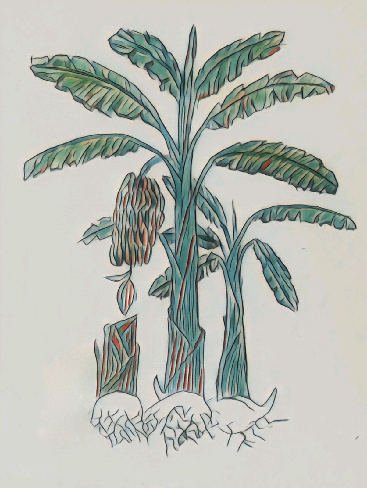
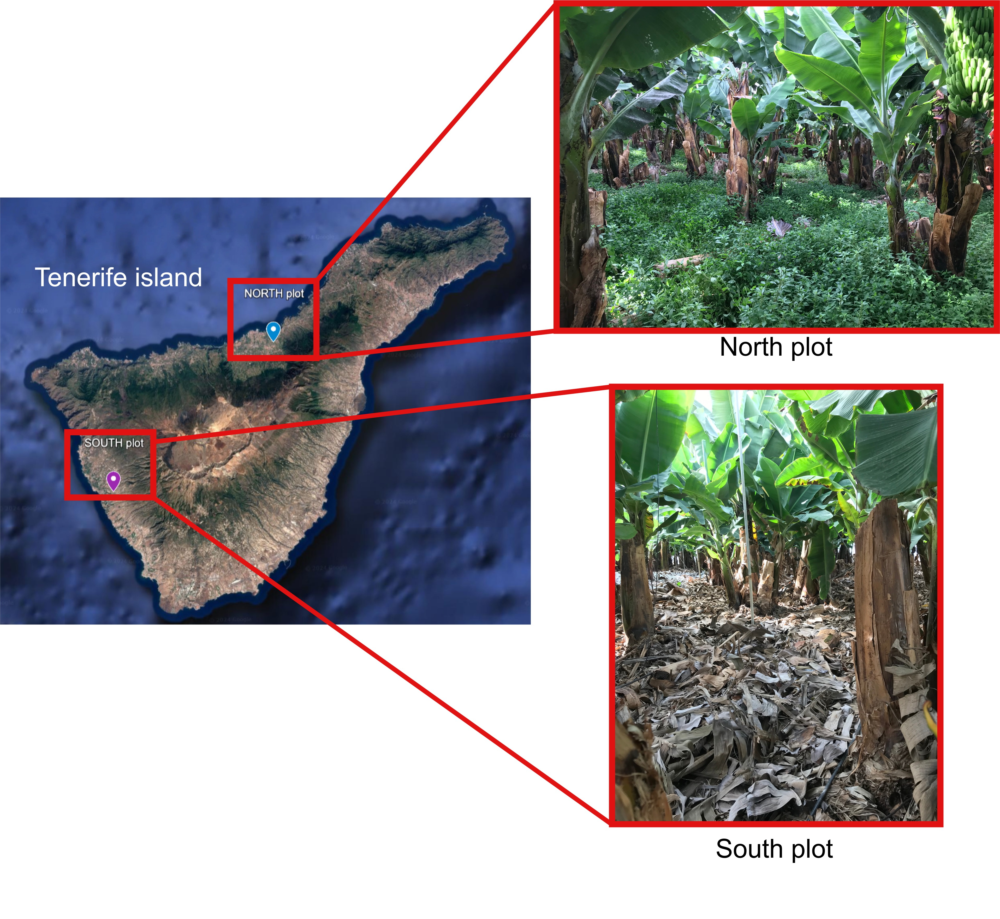

The microbiota of banana plants
Scripts to process and analyze high-throughput sequencing reads

This repository includes all the scripts employed for the processing of amplicon sequencing reads and the scripts needed for all the subsequent ecological analyses.
1. Introduction
These analyses were made for the project EVOMICROBIA (Evolución dirigida de consorcios microbianos mejorados para el biocontrol de la Fusariosis vascular del Plátano de Canarias). The main aim of this work was to analyze the microbial communities (bacteria and fungi) associated to the roots of banana plants (Musa acuminata cv. Pequeña Enana synonymous with Dwarf Cavendish). We also aimed at determining whether microbial members are transferred from mother to sucker plants through the root system, and if possible, to decipher which part of the microbiota is transferred from mothers to first suckers and from these to second sucker plants. We focused on two plots(orchards) located in different points in Tenerife Island (Canary Islands, Spain), with different agronomic management. In the following map, the location of both plots its indicated (Figure 2):

1.1 But.. how do banana plants develop?
Banana mats are comprised of the underground rhizome (also named corm) from which “suckers” or new clonal shoots arise close to mother plants, the pseudostem (composed by tightly packed overlapping leaf sheaths), stem and leafs. Thus, suckers are forms of vegetative reproduction, and can develop and produce an inflorescence when they reach the adult state. Once mother plants produce fruit bunches and they are harvested, mother plants are cut since they do not produce bananas any more. This cycle repeats periodically, so suckers become mothers and so happens with all the clonal progeny (clonal “offspring”).
2. Experimental design
Samples were taken in two consecutive campaigns:
Year 2022: 12 healthy banana mother plants whose sucker plants were actively growing were selected from each of the orchards. Samples from rhizosphere soil of the 12 mother plants were manually collected, along with rhizosphere soils from the sucker plant growing close to the each mother. Roots from each mother and sucker plants were also collected in each orchard Thus, a total of 12 replicates x 2 plants in different developmental state (mother and sucker) x 2 orchards x 2 plant compartments = 96 samples.
Year 2023: the same sampling scheme was followed. However, it should be taken into account that plants that were suckers in 2022 acted as mothers in 2023, and their suckers were considered as the second suckers.
Have a look at the next table that summarizes the sampling scheme.
| Year 2022 | |||||
| Plot 1 (South) | Plot 2 (North) | ||||
| Mother | Sucker | Mother | Sucker | ||
| Rhizosphere | 12 | 12 | 12 | 12 | |
| Endosphere | 12 | 12 | 12 | 12 | |
| Year 2023 | |||||
| Rhizosphere | 12 | 12 | 12 | 12 | |
| Endosphere | 12 | 12 | 12 | 12 |
3. Sequencing scheme
We started from 192 samples, from which total DNA was isolated (in the case of the roots, they were surface sterilized previously). Thus, we got 192 DNA samples. However, it should be taken into account that we wanted to analyze both bacterial and fungal communities. Thus, we had to sequence 192 x 2 = 384 samples (and also the controls). Due to the high amount of samples and the different sampling campaigns, our sequencing plan was divided into different runs. Furthermore, the sequencing service (Instituto de Parasitología y Biomedicina López-Neyra, CSIC, Granada) had to resequence some samples due to technical issues. Thus, our sequencing project had to be divided into the following sequencing runs:
Bacteria:
Run 1: most of the samples corresponding to the first sampling campaign (2022).
Run 2: some additional samples corresponding to year 2022.
Run 3: samples corresponding to the second campaign (2023).
Run 4: resequencing of some samples corresponding to year 2023.
Fungi:
Run 5: most of the samples corresponding to the first campaign (2022).
Run 6: other samples corresponding to 2022.
Run 7: all the samples corresponding to 2023
It should be pointed out that in each sequencing run (just in the case of the bacterial dataset) three replicates of the mock community ZymoBIOMICS Microbial Community Standard II (ZYMO Research) were included.
4. Sample naming
The name of the samples was composed by a combination of alphanumeric characters.
First character: letter “A” for samples obtained in 2022, and “B” for those obtained in 2023.
Second character: numer “1” for the plot located in the south orchard, and “2” for the plot in the north of the island.
Third character: letter “M” for mother plants, and “S” for suckers.
Fourth and fifth character: the number of the replicate. It should be taken into account that from 1 to 9, replicates are names as 01-09.
Sixth character: letter “E” for root endosphere and “R” for rhizosphere soil samples.
Thus, rhizosphere soil of the mother plant number 7 located in the north orchard sampled in 2023 will be named as B2M07E.
5. Technical issues
-In the case of bacteria, the hypervariable regions V3-V4 of the prokaryotic gene 16S rRNA were sequenced. For that purpose, the primer pair Pro341F and Pro805R was employed (Takahashi et al., 2014)
-In the case of fungi, the ITS2 region was sequenced. For that purpose, the primer pair ITS4 and fiTS7 was employed (White et al., 1990 and Ihrmark et al., 2012
-In order to diminish the amplification and sequencing of the DNA from the plant host (from mitochondria, chloroplast etc), DNA was treated with the PNA PCR Clamps proposed by Lunderberg et al., (2013)
-MiSeq Illumina platform was used for the sequencing, and two types of Paired-End strategies were followed:
Runs 1, 2, 3, 5, 6 and 7: 2x275 PE strategy
Run 4: 2x300 PE strategy
The remaining technical issues are explained in the Research Article
6. What will I find in this GitHub project?
In this repository, you will find all the scripts that we used for two types of approaches: 1) Processing of Illumina MiSeq reads and 2) Ecological analyses
6.1 Scripts for the processing of MiSeq reads
These scripts explain all the steps to process the Illumina reads, from the fastq files to a filtered ASV table.
6.2 Script for the ecological analyses
All the steps from the previously obtained ASV table to the alpha and beta diversity, differential abundance analysis, etc.
7. Authors
Antonio José Fernández-González

Pablo J. Villadas
Carmen Gómez-Lama Cabanás
Antonio Valverde Corredor
Manuel Fernández-López
Jesús Mercado-Blanco
8. How to cite
8.1 Main paper
Still building
8.2 Repository
The repository is available at this website (https://anitalasa.github.io/BananaMicrobiota/)
You can also find here (https://anitalasabanana.netlify.app/)
9. References
Ihrmark, K., Bödeker, I.T.M., Cruz-Martinez, K., Friberg, H., Kubartova, A., et al., 2012. New primers to amplify the fungal ITS2 region – evaluation by 454- sequencing of artificial and natural communities. FEMS Microbiol. Ecol. 82, 666–677. https://doi.org/10.1111/j.1574-6941.2012.01437.x
Lundberg, D.S., Yourstone, S., Mieczkowski, P., Jones, C.D., Dangl, J.L., 2013. Practical innovations for high-throughput amplicon sequencing. Nat. Methods. 10, 999–1002. https://doi.org/10.1038/nmeth.2634
Takahashi, S., Tomita, J., Nishioka, K., Hisada, T., Nishijima, M., 2014. Development of a prokaryotic universal primer for simultaneous analysis of bacteria and archaea using next-generation sequencing. PloS One. 9, 8. https://doi.org/10.1371/journal. pone.0105592.
White, T.J., Bruns, T.D., Lee, S.B., Taylor, J.W., 1990. Amplification and direct sequencing of fungal ribosomal RNA genes for phylogenetics, Iin: Innis, M.A., Gelfand, D.H., Sninsky, J.J., White, T.J. (Eds.), PCR Protocols: A Guide to Methods and Applications. Academics Press, San Diego, pp. 315–322.